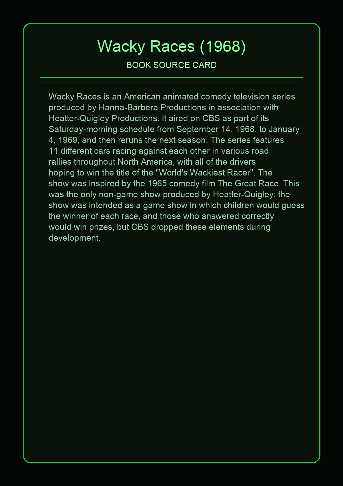

No local photo available for this source yet.
Wacky Races is an American animated comedy television series produced by Hanna-Barbera Productions in association with Heatter-Quigley Productions. It aired on CBS as part of its Saturday-morning schedule from September 14, 1968, to January 4, 1969, and then reruns the next season. The series features 11 different cars racing against each other in various road rallies throughout North America, with all of the drivers hoping to win the title of the "World's Wackiest Racer". The show was inspired by the 1965 comedy film The Great Race. This was the only non-game show produced by Heatter-Quigley; the show was intended as a game show in which children would guess the winner of each race, and those who answered correctly would win prizes, but CBS dropped these elements during development.
This page aggregates references to the source material behind Name Lore entries.